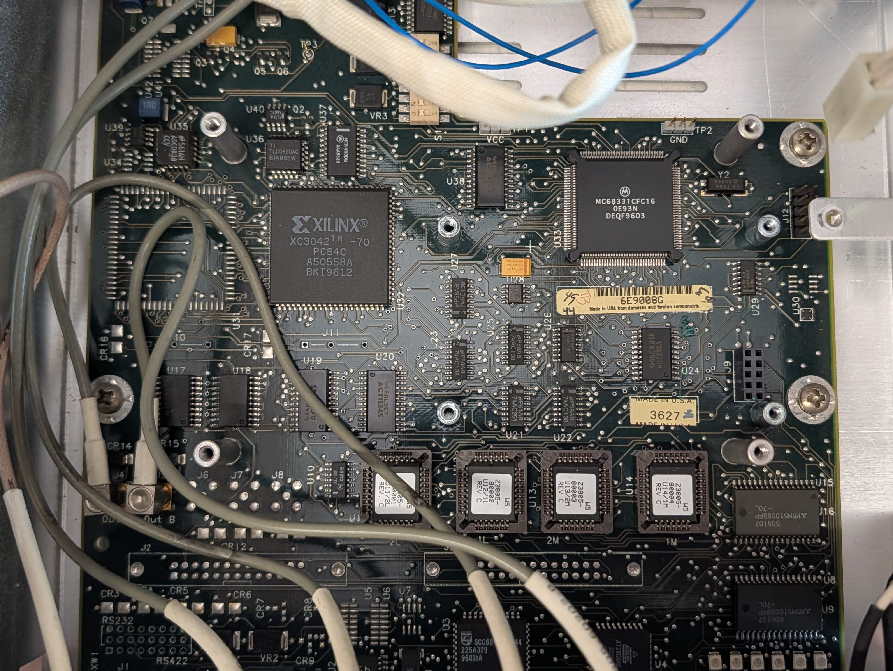

Serial 3625A01487, board serial 6E9008G, date code 3627, firmware 3543B. The component side only, read from the bench's photos on 2026-10-23; nothing here was traced with a meter. See bench.md and hardware-investigations.md.

The board's back side was not photographed. Most signal lines leave a part's pins through vias within a few millimeters, so no line between two parts was followed end to end on the visible layer: not the DUART's interrupt to the processor, not the 1 PPS buffers to J4 and J5, not chip select 1 to the lamp latch.
The analog section above the processor, the oscillator's side, is out of focus in every Z3805A photo.
The 58503A (58503-60001 Rev C, 58503a-interior.jpg) carries the same parts at the same designators where they can be read: SCC68692C1A44 at U3, AT28C64B at U4, LT1180ACSW at U2, ADC0838CCV at U35, TLC0820AC at U36, MC144110 at U37, XC3042 at U32. On the Z3801A (Z3801-68001, z3801a-main-board.jpg) U4 is an Atmel part, its type under the wires, U2 an LT1180ACS, U36 a TLC0820AC, U33 an MC68331CFC16 and U32 an XC3042-70; U3 is under the add-on board.
They differ in what is fitted. U31: an empty PLCC-84 socket on the 58503A, bare pads on the Z3801A and Z3805A. U5, U6 and U7, beside the serial connector: bare on the Z3805A; on the 58503A U7 alone is fitted; on the Z3801A, whose port is RS-422 (097-z3801-01), an AT&T part sits at U5 or U6, the photo does not show which label is its. J2 and J3: boxed headers on the 58503A, bare on the Z3805A; on the Z3801A J2 is bare and a hand-wired add-on board, an MC74ACT14N on it, sits over J3. J13 on the Z3801A, a bare five-position footprint; an AMP connector at that place on the 58503A; on the Z3805A the front board's ribbon plugs in near there, but the designator was not read.
| Ref | Marking | Identification | Photo |
|---|